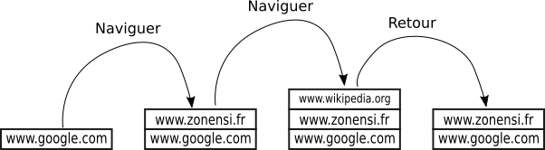
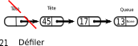

Piles et files
Définitions et exemples
Piles
Définition
Une pile (stack en anglais) est une structure de donnée permettant de stocker un ensemble d'objets tout en respectant certaines règles d'insertion et de délétion :
- un objet est ajouté toujours en haut de la pile (empiler);
- quand on supprime un objet, il s'agit toujours du dernier objet ajouté (dépiler).
On associe à cette structure l'image d'une pile d'assiettes :
Un tel type de structure est souvent appelé :
- Dernier entré, premier sorti (DEPS) en français ;
- Last in, first out (LIFO) en anglais.
Interface
Pour définir l'interface d'un objet de type pile, nous supposerons d'abord que les éléments de la pile sont tous du même type (la pile est homogène).
Pour parler d'une pile d'éléments de type T, on utilisera la notation Pile[T].
L'interface sera simple puisque seulement 4 fonctions sont nécessaires : création d'une pile vide, empiler (push en anglais), dépiler (pop en anglais), et tester la vacuité d'une pile.
| fonction | description |
|---|---|
creer_pile() -> Pile[T] |
crée une pile vide |
est_vide(p : Pile[T]) -> bool |
renvoie True si l'objetpdetype Pile[T] est vide, False sinon. |
empiler(e : T, p : Pile[T]) -> None |
ajoute l'élément e de type T au sommet de la pile p. |
dépiler(p : Pile[T]) -> e : T |
retire et renvoie l'élément e de type T situé au sommet de la pile p. |
Situations utilisant des piles
Lors d'une navigation web, on utilise une pile pour stocker les différentes pages visitées les unes après les autres. Le bouton de retour a pour fonction de dépiler la pile ainsi constituée.
Par exemple :

Une pile est crée lors des différents appels récursifs d'une fonction, et cette pile est dépilée à chaque retour de fonction.
Par exemple, avec la fonction factorielle :

De la même manière que pour le bouton retour d'une page web, les modifications apportées dans un traitement de texte sont stockées dans une pile. L'appui sur Ctrl + Z a pour effet de dépiler, et donc de rétablir le texte à la situation précédente sauvegardée dans la pile.
Files
Définition
Une file (queue en anglais) est une structure de donnée permettant de stocker un ensemble d'objets tout en respectant certaines règles d'insertion et de délétion :
- un objet est ajouté toujours au début de la file (enfiler);
- quand on supprime un objet, il s'agit toujours du dernier objet de la file (défiler).
On associe à cette structure l'image d'une file de personnes faisant la queue :
Une filer est particulièrement adaptée aux traitements séquentiels.
Un tel type de structure est souvent appelé :
- Premier entré, premier sorti (PEPS) en français ;
- First in, first out (FIFO) en anglais.
Interface
Pour définir l'interface d'un objet de type file, nous supposerons d'abord que les éléments de la file sont tous du même type (la file est homogène).
Pour parler d'une file d'éléments de type T, on utilisera la notation File[T].
L'interface sera simple puisque seulement 4 fonctions sont nécessaires : création d'une file vide, enfiler (enqueue en anglais), défiler (dequeue nen aglais), et tester la vacuité d'une file.
| fonction | description |
|---|---|
creer_file() -> File[T] |
crée une pile vide |
est_vide(f : File[T]) -> bool |
renvoie True si l'objetfdetype File[T] est vide, False sinon. |
enfiler(e : T, f : File[T]) -> None |
ajoute l'élément e de type T à la fin de la file f. |
defiler(f : File[T]) -> e : T |
retire et renvoie l'élément e de type T situé au début de la file f. |
Situations utilisants une file
Dans un jeu de bataille, chaque joueur possède une file de carte. On défile chaque paquet, compare les cartes, et le vainqueur enfile les cartes récoltées dans son paquet, jusqu'à ce qu'un des joueurs ait une file vide.
Les serveurs d'impression traitent les requêtes dans l'ordre dans lequel elles arrivent, et les insèrent dans une file d'attente (dite aussi queue ou spool), lorsque d'autres travaux sont en exécution.
Une mémoire tampon, ou buffer, est une zone de mémoire vive qui va être utilisée pour stocker des données circulant entre deux périphériques ne fonctionnant pâs à la même vitesse, par exemple entre la connexion internet et le flux vidéo :
- si la vitesse de connexion est supérieure au débit vidéo, le buffer va se remplir des données vidéo, et le lecteur vidéo les lira dans leur ordre d'arrivée (PEPS) ;
- si le lecteur vidéo constate une chute du débit - il n'a plus de données à lire, il va attendre que la file du buffer atteigne une certaine taille afin de relancer une lecture vidéo plus fluide - c'est le buffering.
Implémentations d'une Pile
A partir d'une liste python
Implémentation à partir du type list
Compléter le code suivant afin qu'il corresponde à l'interface définie pour les piles, en utilisant le type list de python:
class Pile :
def __init__(self) :
...
def est_vide(self) :
...
def empiler(self, v) :
...
def depiler(self) :
...
class Pile :
def __init__(self) :
self.p = []
def est_vide(self) :
return self.p == []
def empiler(self, v) :
self.p.append(v)
def depiler(self) :
return self.p.pop()
Un code simple et efficace ?
Certes le codage effectué est simple, et ne présente aucune difficulté. Cependant certains mécanismes du type list en python sont cachés, comme par exemple l'allocation dynamique de mémoire. Cette allocation se fait à la création, puis quand la lite dépasse certaines valeurs (définies spécifiquement dans la doc : 0, 4, 8, 16, 25, 35, 46, 58, 72, 88... voir ici), la réservation mémoire pour la liste est augmentée puis la liste originelle est copiée dans le nouvel emplacement. Cela génère bien entendu une complexité en temps comme en mémoire inutile dans la plupart des cas.
A partir d'une liste chaînée
Une des possibilités les plus simple pour implémenter une pile est d'utiliser les liste chaînée. En effet, dans une liste chaînée nous pouvons insérer et supprimer facilement la tête de la liste, ce qui correspondra au sommet de la pile, et nous n'aurons plus le problème d'agrandissement généré par le type list de python.
Implémentation par les listes chaînées
Compléter le code suivant afin qu'il corresponde à l'interface définie pour les piles :
class Chainon :
def __init__(self, valeur, suivant) :
self.valeur = valeur
self.suivant = suivant
class Pile :
"""interface de pile"""
def __init__(self) :
...
def est_vide(self) :
...
def empiler(self, v) :
...
def depiler(self) :
...
A venir !
Implémentations d'une File
Implémentation par une liste chaînée mutable
Implémentation par liste chaînée mutable
Bien que nous ayons vu qu'utiliser des listes mutables puisse être parfois une mauvaise idée, il est cependant possible de les utiliser, du moins dans une version adaptée, afin de construire un objet correspondant à l'interface définie pour les files.
{kind=link}
Pour cela il faudra utiliser deux attributs tete et queue, qui représenteront respectivement le chainon de début et le chainon de fin de la file.
Défiler consistera à changer la tête en sortant la valeur :

Enfiler consistera à changer la queue :
Compléter le code suivant pour qu'il respecte l'interface définie pour une file :
class Chainon
def __init__(self, valeur, suivant) :
self.valeur = valeur
self.suivant = suivant
class File :
"""interface de file"""
def __init__(self) :
self.tete = None
self.queue = None
def est_vide(self) :
...
def enfiler(self, v) :
...
def defiler(self) :
...
A venir !
Implémentation par deux piles
Une autre implémentation : Utiliser deux piles
Une implémentation totalement différente de la première est d'utiliser deux piles, une pile d'entrées et une pile de sorties.
Le principe est celui d'un jeu de carte dans lequel il y a une défausse :
- Le paquet de carte principal est le paquet de sortie : c'est la pile de sortie. On tire une carte à partir de cette pile.
- La défausse est composée de cartes jouées face ouverte, posées sur le sommet du paquet de défausse. C'est la pile d'entrées.
- Quand le paquet principal est vide, on prend la défausse et sans la mélanger on la retourne et elle prend la place du paquet principal.
Compléter le code suivant pour qu'il corresponde à l'interface d'une file telle que nous l'avons défini plus haut :
class File :
def __init__(self) :
self.entrees = Pile()
self.sorties = Pile()
def est_vide(self) :
...
def enfiler(self, v) :
...
def defiler(self) :
...
A venir !
Exercices
Ajouter des méthodes
Compléter le code de la classe Pile construite à partir d'une liste chaînée avec les méthodes suivantes :
- Une méthode
consulterpermettant de connaître l'élément au sommet de la pile sans le dépiler. - Une méthode
viderpermettant de vider la pile de ses éléments - Une méthode
taillerenvoyant la taille de la pile. Quelle est la complexité utilisée ?
A venir !
Améliorer le calcul de la taille
Pour éviter le problème rencontré dans l'exercice précédent, nous allons modifier la structure de la classe Pile .
Nous allons ajouter un attribut _taille à la classe, qui contiendra en permanence la taille de la pile courante.
Quelles méthodes modifier ? Quelle est alors la complexité ?
A venir
Calculatrice à notation polonaise inversée
La notation polonaie inversée (NPI ou RPN en anglais) permet d'écrire de façon non ambiguë les formules arithmétiques sans utiliser de parenthèses.
Par exemple, le calcul \(((1 + 2) \times 4) + 3\) est noté en NPI :
Le calcul \(((1 + 2) \times 4) + 3\) peut se lire intuitivement :
- je mets 1, (\(1\)) ;
- j'ajoute 2, (\(2 +\)) ;
- je multiplie par 4, (\(4 \times\)) ;
- j'ajoute 3. (\(3 +\)).
Ce qui donne la notation précédente.
On peut tester ce calcul et cette notation sur le simulateur omega de la calculatrice Numworks.
La NPI est dites inversée car elle dérive de la notation polonaise présentée en 1924 par le mathématicien polonais Jan Łukasiewicz, et elle s’en différencie par l’ordre des termes, les opérandes y étant présentés avant les opérateurs.
La structure de calcul en NPI est utilise une pile de la manière suivante :
- quand on rencontre un nombre, on l'enpile ;
- quand on rencontre un opérateur (\(+,~\times~,-~,...\)) on dépile les deux nombres au sommet de la pile et on effectue l'opération, le résultat étant de nouveau empilé.
Si le calcul est correctement écrit, il y a toujours au moins deux nombres dans la pile quand on rencontre un opérateur, et il reste un seul et unique nombre dans cette pile quand l'expresion a été entièrement lue.
Créer une fonction NPI prenant en argument un calcul en NPI représenté sous la forme d'une chaîne de caractères dont les élements (opérandes et opérateurs) sont séparés d'un espace,
et qui renvoie le résultat du calcul.
A venir !